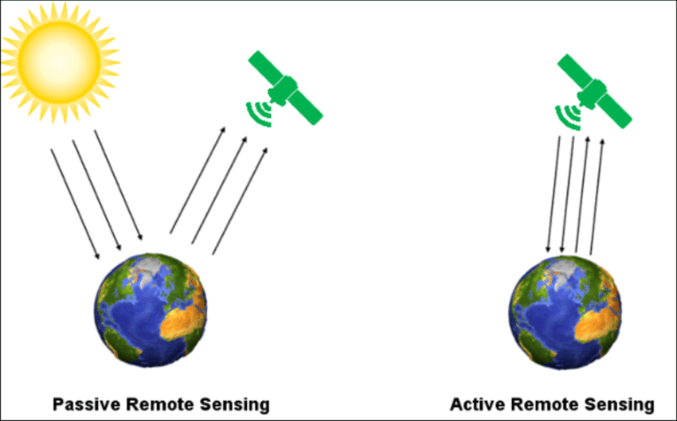
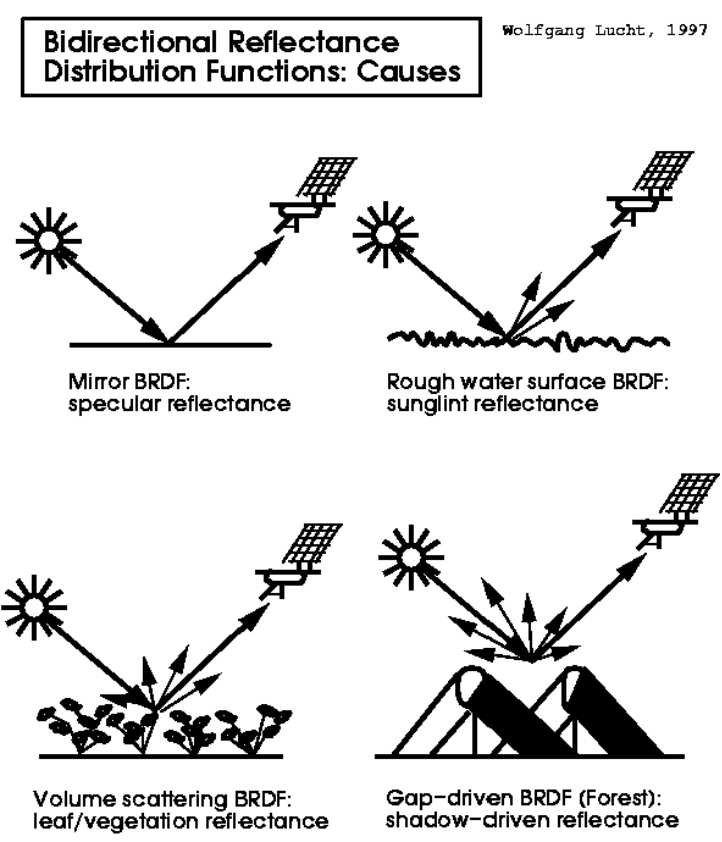
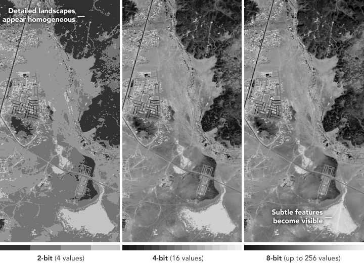
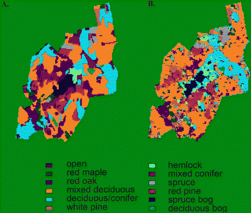
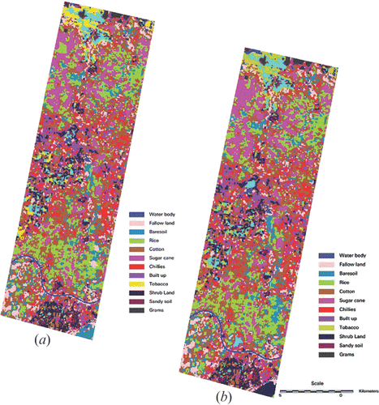

3 Week_1
The definition of remote sensing
3.1 Summary：
Remotely sensed images and the corresponding analytical techniques offer a comprehensive approach to observing and monitoring urban environments in real-time through high spatial-temporal-spectral-resolution data.
3.1.1 Passive sensor and active sensors
There are passive sensors and active sensors, which the difference is the passive sensor reflect energy from the sun, but active sensors actively emits electormagentic waves and then waits to receive them. Example of passive sensors: camera, infrared,thermometers, human eyes; example of active sensors: radar, sonar, x-ray.
 Figure from (ResearchGate 2016)
3.1.2 Formula
\[ wavelength( \lambda ) = \frac{velocity\qquad of\qquad light(c)}{frequency(v)}\]
3.1.3 Scatter in action
Why the sky is blue: blue lights have smaller wavelengths which can scatter easier.
Why the sky is orange and red at sunset: when the sun’s angle changes, the blue light scatter doesn’t reach our eyes as the distance is increased, so longer wavelengths like reds and oranges can be seen as they are the longest wavelengths. We can see the color since there is atmosphere so molecules scatter the light. The other colors are scattered so we can only see orange or red color.
3.1.4 Interacting with earth’s surface
BRDF quantifies how a surface reflects light, varying with illumination and viewing angles, wavelength, and surface properties, factors like shadowing, scattering, reflection, absorption, and surface texture influence the BRDF (Massachusetts Boston 2023).

Figure from (Massachusetts Boston 2023)
SAR data, or Synthetic Aperture Radar, involves active data obtain in which the sensor emits its own energy and then measures the amount of this energy that is reflected back after it interacts with the Earth’s surface (NASA Earthdata 2023). The detail of it will be in week 9.

Figure from (NASA Earthdata 2023)
3.1.5 Four resolutions
3.1.5.1 Spatial
Refers to the smallest dimension of an image unit that can differentiate between objects, or the minimum angular or linear separation needed to discern separate objects within an image, the characteristic is the ability to identify and divide two close objects in an image (ScienceDirect 2023).
3.1.5.2 Spectral
Spectral resolution describes the capacity of a sensor to define fine wavelength intervals (Canada 2015), not just the visible light (red, green, blue). An object’s color depend on which wavelengths they reflect, with others being absorbed or scattered. Our observation are limited due to the wavelengths absorbed by water vapour, ozone, and other gases. Spectral resolution classification is based on the number of observed bands measuring spectral reflectance, it isn’t limited to remote sensors; it can also be conducted using ‘spectroradiometers’ in labs or fields, requiring calibration with a pure white reference panel.
3.1.5.3 Temporal
Refers to the duration required to return to and collect information from the identical spot again, it is to say, is how often something is measured or recorded over time. There maybe trade-offs between temporal and spatial resolution according to the limitation of technology.
3.1.5.4 Radiometric
Radiometric resolution refers to the level of detail in a pixel’s recorded energy, quantified in bits, each bit doubles the range of energy values, so an 8-bit resolution means the sensor can distinguish between 256 different energy levels, ranging from 0 to 255 (Earthdata 2024).

Figure from (Earthdata 2024)
3.1.6 Biases
In the UK, cloud cover and atmospheric constituents like water vapor and carbon dioxide can significantly impact remote sensing data. These factors obstruct parts of the electromagnetic spectrum, preventing certain wavelengths from reaching the earth’s surface or sensors. This interference distorts accurate observations and analysis, leading to challenges in capturing clear remote sensing imagery. Thus, atmospheric conditions and clouds are key considerations in remote sensing applications in the UK, which will be seen after week 6 in google earth engine processes.
3.2 Application
I am particularly interested in the resolutions of remote sensing data, since I learnt urban design before, and I used to think of resolution is something that can directly change in Photoshop, and it is the first time of knowing how the remote sensing technique are being used to capture images and how radiometric resolution can decide the level of detail visible in the images.
3.2.1 Application 1
The study investigates forest species classification using high spectral resolution remote sensing data (Martin et al. 1998), specifically from the Airborne Visible/Infrared Imaging Spectrometer (AVIRIS). It differentiates 11 forest types based on spectral signatures correlated with chemical properties like nitrogen and lignin in foliage. Using selected spectral bands and a maximum likelihood algorithm, the study achieved a classification accuracy of 75% at Harvard Forest, and it was been varified by field measurements of foliar biomass and stand structure. This approach demonstrates the effectiveness of high spectral resolution in detailed forest composition analysis, it also showed a significant potential of forest management as well as the environment science.

species map Figure from (Martin et al. 1998)
3.2.2 Application 2
The study investigated the impact of radiometric resolution on the classification accuracy of remote sensing data over three different sites in Northern Greece (Rama Rao et al. 2007). Through various classification experiments using fine and low radiometric resolution images, the research found that higher radiometric resolution does not always result in significantly improved classification accuracy. Using high radiometric resolution (12-bit) LISS-III data results in a small amount of improvement of 3% in overall accuracy for land use/land cover categorization compared to using moderate radiometric resolution (7-bit) LISS-III data. The study also explored the influence of radiometric resolution on computational time and the informational content of images, concluding that in certain situations, lower radiometric resolution can be sufficient for accurate classification tasks. This finding suggests that remote sensing applications might not always need the highest radiometric resolution, especially when considering storage and processing constraints.
 Figure from (Rama Rao et al. 2007)
- is from 7-bit LISS-III, and (b) is from 12-bit LISS-III, can’t see the difference in the picture with the naked eye.
3.2.3 Application critique
Spectral resolution refers to a sensor’s ability to distinguish between different electromagnetic wavelengths, while radiometric resolution describes the precision with which the sensor measures the strength of these electromagnetic signals (International Earth Science Information Network (CIESIN), n.d.). And it is also very interesting to see it is not the fact that the higher radiometric resolution result in higher accuracy significantly, it is important to balance data details with processing capabilities.
3.3 Reflection
Reflecting on my journey through learning remote sensing, I noticed the depth and of this field. Initially, I thought it as a straightforward method of observing the earth from space, but I now have understood the complex of its technologies and principles. Understanding the difference between passive and active sensors was a key learning moment for me. And the example of passive sensor of human eye helped me to learn the knowledge. Sensors could either rely on the earth’s natural energy or create their own to study the environment.
It’s interesting how these sensors, through different mechanisms, contribute to a comprehensive view of our planet’s surface and atmosphere. The scientific foundation, particularly the principles of light wavelength, speed, and frequency has remind me the basic knowledge from a-level physics. The explanation of why the sky is blue, based on the scattering of light, provided a down-to-earth example of how remote sensing blends physics with environmental science, making the abstract more understandable. Facing the challenges of atmospheric interference in remote sensing, especially in regions like the UK where there are always cloud cover, emphasized the complexities and limitations. It made me realize the importance of keeping low bias when practice.
What I’m most interested in this learning journey is the resolution of the remote sensing data, it established a linked between this module and the urban design modules I learnt before, and it is much deeper as they can be used to do for example, forest species classification, and many other environment fields which I am interested in.